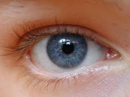

Una imagen dice mas que mil palabras
¿Alguna vez has viajado fuera de tu ciudad?, ¿Existen lugares los cual quieres conocer? Pues dale un vistazo al mundo con esta API donde encontraras fotos de todos los lugares del mundo desde los desiertos más calurosos hasta los polos más fríos.
